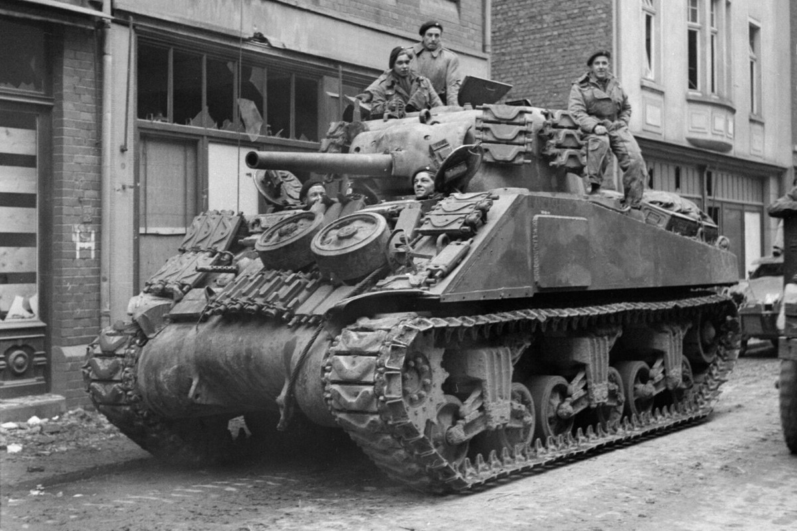

M4 Sherman
Giới thiệu
M4 Sherman là xe tăng hạng trung chủ lực của Hoa Kỳ và nhiều nước Đồng Minh trong Thế chiến II.
Xe nổi tiếng nhờ độ tin cậy, khả năng bảo dưỡng thuận tiện, sản xuất quy mô lớn và có nhiều biến thể cho các nhiệm vụ khác nhau.
Lịch sử phát triển
M4 được phát triển từ M3 Lee và bắt đầu sản xuất năm 1942. Thiết kế tiêu chuẩn hóa giúp các nhà máy Hoa Kỳ chế tạo hàng chục nghìn chiếc.
Sherman tham chiến tại Bắc Phi, Italia, Tây Âu và Thái Bình Dương. Các phiên bản sau được trang bị pháo 76 mm, giáp cải tiến hoặc hệ thống treo mới.
Thông số kỹ thuật
| Quốc gia | Hoa Kỳ |
|---|---|
| Phân loại | Xe tăng hạng trung |
| Thời gian phục vụ | Từ năm 1942 |
| Kíp lái | 5 người |
| Khối lượng | Khoảng 30–33 tấn |
| Động cơ | Nhiều loại tùy phiên bản |
| Công suất | Khoảng 350–500 mã lực |
| Tốc độ tối đa | Khoảng 38–48 km/h |
| Tầm hoạt động | Khoảng 160–240 km |
| Giáp | Khoảng 12–76 mm |
Vũ khí
- Pháo chính 75 mm M3 hoặc 76 mm M1 tùy phiên bản.
- Một súng máy đồng trục và một súng máy thân xe cỡ 7,62 mm.
- Thường có súng máy hạng nặng M2 12,7 mm trên nóc tháp pháo.
Ưu điểm
- Độ tin cậy cơ khí cao.
- Dễ bảo trì, sửa chữa và vận chuyển.
- Sản xuất với số lượng rất lớn.
- Nhiều biến thể và trang bị chuyên dụng.
Nhược điểm
- Các phiên bản pháo 75 mm gặp khó khăn trước giáp trước của Panther và Tiger.
- Thân xe tương đối cao.
- Giáp không mạnh bằng các xe tăng hạng nặng cuối chiến tranh.
Các trận đánh và chiến dịch tiêu biểu
Bắc Phi
Sherman lần đầu tham chiến quy mô lớn trong chiến dịch El Alamein và các trận tại Tunisia.
Normandy
M4 là lực lượng thiết giáp chủ lực của Hoa Kỳ và Anh sau cuộc đổ bộ tháng 6 năm 1944.
Chiến dịch tiến vào Đức
Sherman tiếp tục được sử dụng rộng rãi trong các cuộc tiến công qua Pháp, Bỉ và Đức.
Đánh giá tổng quan
M4 Sherman không phải xe tăng mạnh nhất trong đấu tay đôi, nhưng là một hệ thống chiến đấu rất hiệu quả nhờ độ tin cậy, hậu cần và số lượng.
Khả năng phối hợp với bộ binh, pháo binh, không quân và các đơn vị sửa chữa là yếu tố quan trọng tạo nên thành công của Sherman.